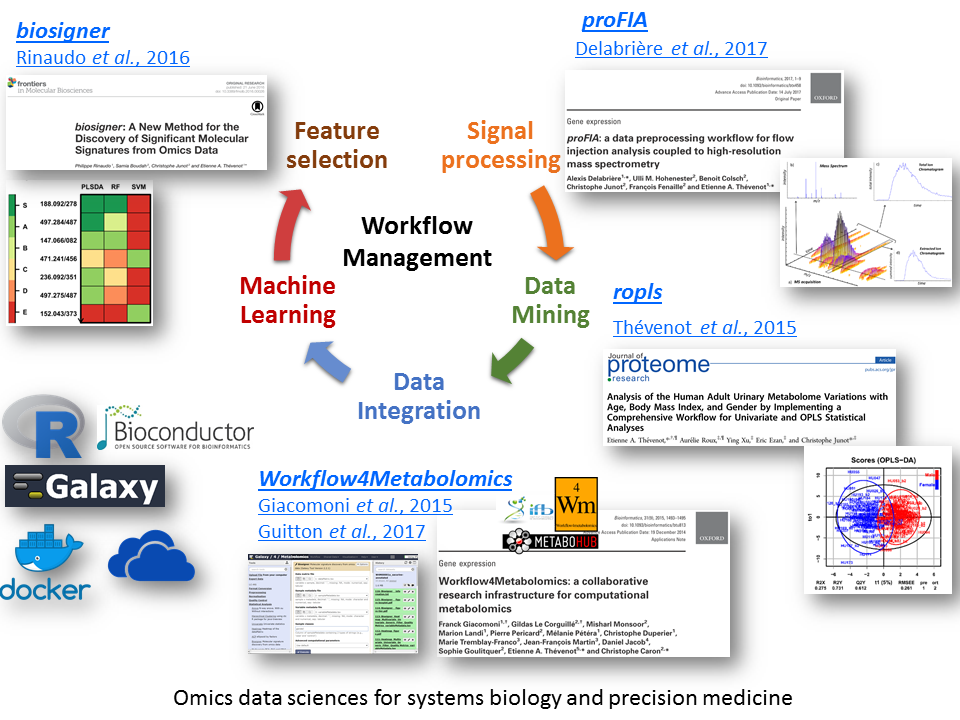
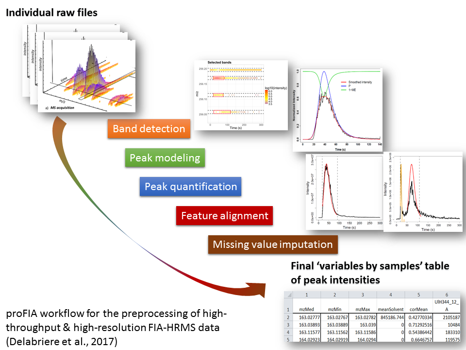
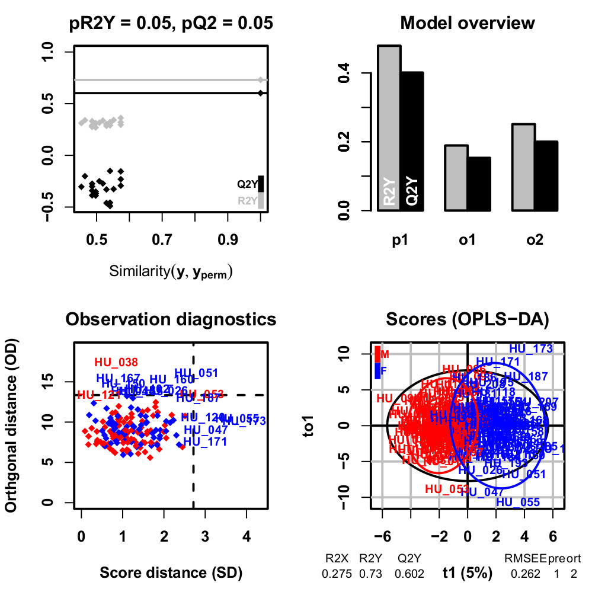
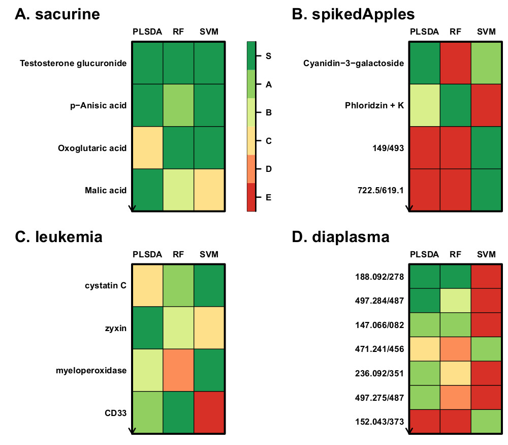
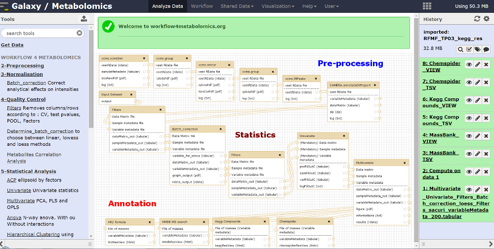

Our research has been focusing for more than 12 years on omics data sciences for systems biology and precision medicine, with a particular emphasis on metabolomics data sciences.
Data sciences provide powerful approaches and algorithms (signal processing, data mining, machine learning, artificial intelligence) for the processing and analysis of high-dimensional data, such as omics datasets. Metabolomics (untargeted analysis of small molecules involved in biochemical reactions) is of major interest for phenotype characterization and biomarker discovery. High-resolution mass spectrometry (HRMS) is a technology of choice for metabolomics (and also for proteomics), due to its sensitivity and resolution.
Metabolomics data science is challenging for (at least) three reasons. First, the signal generated by mass spectrometry instruments is specific (retention time dimension, heteroscedastic noise, analytical drift). Second, as in other omics, the number of detected features is higher than the number of samples, and many variables are correlated. Third, structural characterization of the metabolites based on their mass and fragmentation pattern is often only partial due to the chemical diversity of the metabolome. Our team has been developping innovative methods and tools to tackle each of these challenges.

Direct injection methods (such as Flow Injection Analysis) are of particular interest for high-throughput phenotyping. We therefore developed an innovative preprocessing workflow which takes as input the individual raw files and generates the samples by variables table of intensities (peak table). The steps include (i) peak detection and quantification within each file, (ii) peak alignment across samples to generate the peak table, and (iii) missing value imputation. In particular, new methods were required to optimize step (i), including noise estimation, modeling of the injection peak, and precise determination of each analyte peak borders. Application to several real data sets resulted in robust and accurate detection and quantification. proFIA is available as an R/Bioconductor package and as a Galaxy module (Delabrière et al, 2017).

We implemented the Orthogonal Partial Least-Squares (OPLS) approach for regression and classification from Trygg and Wold (2002) as an R package named ropls (Thévenot et al, 2015). OPLS algorithm is a variation of PLS and allows to model separately the orthogonal variation (i.e. non-correlated to the response) and the predictive variation (i.e. correlated to the response), and thus facilitates model interpretation.

Finally, we developed a new methodology for feature selection, of the wrapper type, which assesses the significance of the features for the model performance (biosigner R package). The wrapping of three classifiers (PLS-DA, Random Forest and Support Vector Machine) with this methodology resulted in stable signatures of restricted size, when applied to real metabolomics and transcriptomics datasets (Rinaudo et al, 2016).

All algorithms are available both as R packages (Bioconductor repository) and Galaxy modules (Workflow4Metabolomics online infrastructure jointly developed and maintained by the French Institute of Bioinformatics and MetaboHUB; Giacomoni et al, 2015; Guitton et al, 2017).
